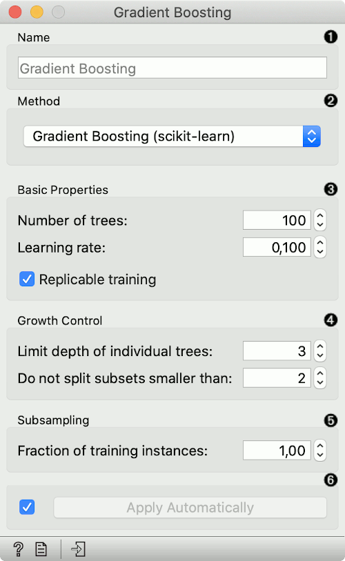
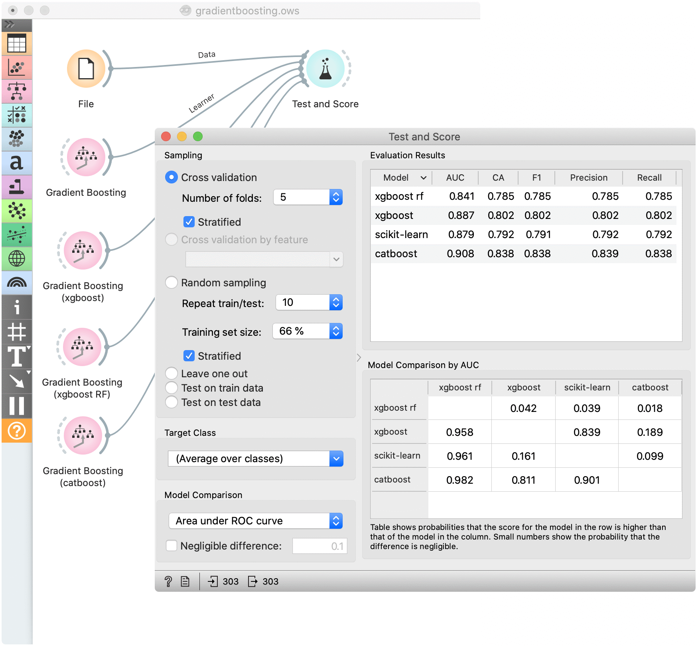

Gradient Boosting
Predict using gradient boosting on decision trees.
Inputs
- Data: input dataset
- Preprocessor: preprocessing method(s)
Outputs
- Learner: gradient boosting learning algorithm
- Model: trained model
Gradient Boosting is a machine learning technique for regression and classification problems, which produces a prediction model in the form of an ensemble of weak prediction models, typically decision trees.

- Specify the name of the model. The default name is “Gradient Boosting”.
- Select a gradient boosting method:
- Basic properties:
- Number of trees: Specify how many gradient boosted trees will be included. A large number usually results in better performance.
- Learning rate: Specify the boosting learning rate. Learning rate shrinks the contribution of each tree.
- Replicable training: Fix the random seed, which enables replicability of the results.
- Regularization: Specify the L2 regularization term. Available only for xgboost and catboost methods.
- Growth control:
- Limit depth of individual trees: Specify the maximum depth of the individual tree.
- Do not split subsets smaller than: Specify the smallest subset that can be split. Available only for scikit-learn methods.
- Subsampling:
- Fraction of training instances: Specify the percentage of the training instances for fitting the individual tree. Available for scikit-learn and xgboost methods.
- Fraction of features for each tree: Specify the percentage of features to use when constructing each tree. Available for xgboost and catboost methods.
- Fraction of features for each level: Specify the percentage of features to use for each level. Available only for xgboost methods.
- Fraction of features for each split: Specify the percentage of features to use for each split. Available only for xgboost methods.
- Click Apply to communicate the changes to other widgets. Alternatively, tick the box on the left side of the Apply button and changes will be communicated automatically.
Preprocessing
Gradient Boosting uses default preprocessing when no other preprocessors are given. It executes them in the following order:
- removes instances with unknown target values
- continuizes categorical variables (with one-hot-encoding)
- removes empty columns
- imputes missing values with mean values
To remove default preprocessing, connect an empty Preprocess widget to the learner.
Feature Scoring
Gradient Boosting can be used with Rank for feature scoring. See Learners as Scorers for an example.
Example
For a classification tasks, we use the heart disease data. Here, we compare all available methods in the Test & Score widget.
